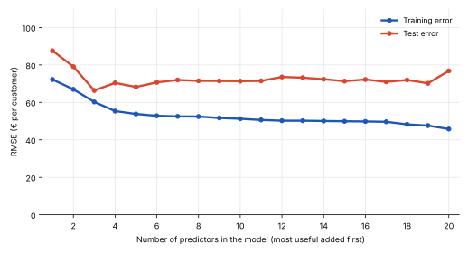
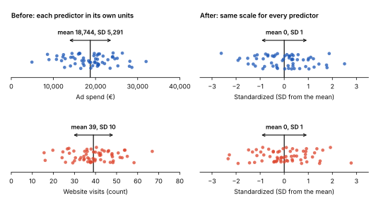
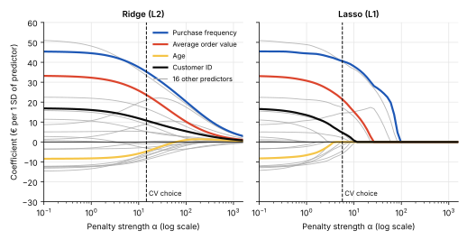
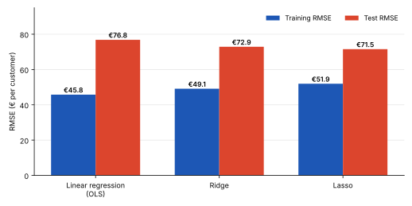
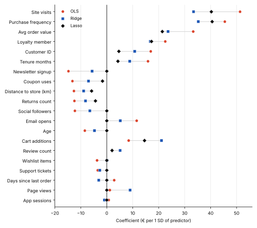
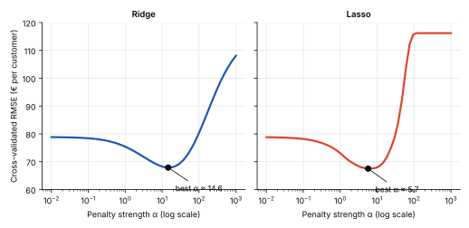

Regression analysis
Variable Selection vs. Regularization: Managing Model Complexity
An online retailer wants to predict how much each customer will spend. The data has 20 columns: age, purchase frequency, average order value, customer ID, site visits, newsletter sign-up and more. It is tempting to give the model all of them. More information should mean better predictions, right?
Not necessarily. In Overfitting and Underfitting we saw that a model can fit its training data closely and still fail on new customers. This post looks at two ways to manage that risk: choosing which predictors to keep (variable selection) and limiting how large their coefficients can become (regularization). Both are run on the same example: net revenue per customer, 100 simulated customers and 20 candidate predictors. All data is illustrative.
When Does a Regression Model Become Too Complex?
Every predictor adds a coefficient that the model must estimate. With 60 training customers and 20 predictors, estimating these coefficients reliably can be difficult, especially when some predictors overlap in the information they provide.
Some predictors carry useful information, such as purchase frequency and average order value. Others may contribute little or no predictive value. Customer ID, for example, is an identifier rather than a meaningful measure of customer behavior.
Ordinary least squares estimates coefficients to minimize the squared prediction errors on the training data. Without constraints, the model may also capture random fluctuations that do not generalize to new customers.
The chart below illustrates what happens as predictors are added to an ordinary linear regression model, one at a time. The order is determined by forward selection, introduced in the next section, using the training data only. This helps illustrate how adding predictors can improve the fit to training data without necessarily improving predictions on unseen customers.

More predictors do not automatically lead to better predictions on unseen data. Two approaches can help control model complexity:
- Variable selection decides which predictors to include in the model.
- Regularization penalizes large coefficients, shrinking their influence. Lasso can even shrink some coefficients to exactly zero.
Both approaches can help reduce overfitting by trading some bias for lower variance, connecting to the bias–variance trade-off discussed in Overfitting and Underfitting. Whether they improve predictions depends on the data and how the methods are applied.
Variable Selection: Choosing Which Predictors to Keep
Imagine an analyst building a revenue forecast from a long list of candidate predictors. For each one, she asks: does it improve the model enough to justify including it? Purchase frequency may provide useful information about customer spending. Customer ID, by contrast, is usually just an identifier and should not be treated as a meaningful predictor.
Variable selection automates the process of choosing a subset of predictors. It compares candidate models using a defined criterion, such as cross-validated prediction error, adjusted R², AIC or BIC, and selects predictors according to that criterion. Two common approaches build the model step by step.
Forward selection
- Start empty. The model contains no predictors and, with an intercept, predicts the average revenue for every customer.
- Add the best predictor. Each remaining predictor is tested, and the one that improves the chosen selection criterion the most is added.
- Repeat. Continue until no remaining predictor provides sufficient improvement, according to the chosen stopping rule.
In our example, forward selection uses 5-fold cross-validation on the 60 training customers to compare candidate models. It selects purchase frequency first, followed by site visits, average order value and loyalty membership. The procedure stops at eight predictors. Age and customer ID are not selected.
![Line chart of cross-validated RMSE against the number of predictors, read from left to right as predictors are added. The error starts at about 116 euros for the average-revenue model with no predictors, falls to about 75 euros after the first predictor and to about 59 euros after five, stays near 58.6 euros from seven to ten predictors, and is lowest at eight predictors, marked with a ring. Each added predictor is labeled with a plus sign in order: purchase frequency, site visits, average order value, loyalty member, coupon uses, distance to store, newsletter sign-up and wishlist items. A dashed gray line shows that adding more predictors would raise the error again, to about 79 euros with all 20.](images/variable-selection-regularization/chart-2-forward-selection-steps.svg)
Backward elimination
Backward elimination starts with all 20 candidate predictors and removes the least useful one at each step. After each removal, the model is evaluated again using the chosen selection criterion. The process stops when removing another predictor no longer improves that criterion.
In our example, backward elimination selects eight predictors. However, it does not necessarily select the same eight as forward selection: the result can depend on the selection criterion and the combination of predictors already in the model.
Backward elimination also requires the initial model to be estimable. With only 60 training customers and 20 predictors, fitting the starting model is possible in this example, but the estimates may be unstable, especially if predictors are strongly correlated.
![Line chart of cross-validated RMSE against the number of predictors remaining, read from left to right as predictors are removed. The error starts at about 79 euros with all 20 predictors and falls steadily to about 58.6 euros with eight predictors, marked with a ring. Each removed predictor is labeled with a minus sign in order: customer ID, tenure, social followers, returns count, support tickets, page views, days since last order, cart additions, app sessions, email opens, age and review count. A dashed gray line shows that removing more predictors would raise the error again, to about 116 euros for the average-revenue model with none.](images/variable-selection-regularization/chart-3-backward-elimination-steps.svg)
Key idea
Selection decides which predictors enter the model. The predictors that remain keep their ordinary, unpenalized coefficients.
Regularization: Controlling the Size of Coefficients
Regularization takes a different approach from variable selection. Instead of deciding only which predictors to include, it adds a penalty for large coefficients to the model’s loss function.
Why does this help? Ordinary least squares minimizes the sum of squared prediction errors on the training data. With many predictors, the model may fit random patterns in the training data that do not generalize to new customers.
Regularization introduces a trade-off: the model must fit the data while keeping its coefficients under control. Ridge regression shrinks coefficients toward zero, while Lasso can shrink some coefficients exactly to zero.
Adding a penalty to the loss function
The loss function describes what the model tries to minimize. Ordinary least squares considers the squared prediction errors:
Loss = nΣi=1 (yi − yi)2Here, yi is the actual revenue for customer i, and yi is the revenue predicted by the model.
Regularization adds a penalty term:
Loss = nΣi=1 (yi − yi)2 + λ · Penalty
What does λ do? Lambda controls the strength of the penalty. A larger λ generally shrinks coefficients more strongly, while λ = 0 removes the penalty and gives ordinary least squares.
The penalty differs by method: Ridge penalizes squared coefficients (L2), while Lasso penalizes absolute coefficient values (L1).
Two details matter before we look at the two penalties:
- Standardize the predictors. Ridge and Lasso penalize coefficient sizes, so if predictors use different scales (euros versus number of visits), the penalty affects them unevenly. Standardizing each predictor to a mean of 0 and a standard deviation of 1 makes the penalty comparable across predictors. Coefficients then represent the predicted change in revenue associated with a one-standard-deviation increase in a predictor, holding the other predictors constant.
- Do not penalize the intercept. The intercept is the model’s baseline prediction. Regularization is designed to constrain the influence of predictors, not to force this baseline toward zero, so the intercept is usually left unpenalized and the model can estimate it freely.

Ridge vs. Lasso: Two Types of Penalties
Lasso (L1)
Loss = nΣi=1 (yi − yi)2 + λ × Σ |bj|The penalty is the sum of the absolute values of the coefficients.
Lasso penalizes the absolute values of coefficients. Unlike Ridge, it can shrink some coefficients exactly to zero, effectively removing those predictors from the model. In our example, Lasso sets 9 of the 20 coefficients to zero, including age. However, customer ID retains a small coefficient (€4.7), showing that Lasso does not automatically identify every irrelevant predictor.
Ridge (L2)
Loss = nΣi=1 (yi − yi)2 + λ × Σ bj2The penalty is the sum of the squared coefficients.
Because Ridge penalizes squared coefficients, large coefficients contribute disproportionately to the penalty. It shrinks coefficients toward zero but generally does not set them exactly to zero. This is especially useful when predictors are correlated, as Ridge can distribute their influence across them. In our data, Ridge shrinks purchase frequency from €45.5 to €35.3 and customer ID from €16.9 to €10.8.

Elastic Net
Elastic Net combines Ridge and Lasso, bringing together the strengths of both approaches. It shrinks coefficients toward zero like Ridge, while also allowing some coefficients to become exactly zero, as with Lasso.
- A balance between the two. The
l1_ratioparameter controls the mix of L1 and L2 penalties. Values closer to 1 behave more like Lasso, while values closer to 0 behave more like Ridge. - Feature selection. Like Lasso, Elastic Net can remove less useful predictors by shrinking their coefficients to zero.
- Correlated predictors. When several predictors contain similar information, Elastic Net can be more likely than Lasso to retain them together.
- Choosing the parameters. In scikit-learn,
ElasticNetCVuses cross-validation to find suitable values for both the penalty strength (alpha) and the mixing ratio (l1_ratio).
Key idea
Regularization controls the size of coefficients. Ridge shrinks them all; Lasso can also shrink some exactly to zero, so it performs variable selection as a side effect; Elastic Net combines the two.
Variable Selection vs. Regularization: Two Approaches, Different Mechanisms
Variable selection decides which predictors to keep. Ridge controls how strongly predictors influence the model. Lasso does both: it shrinks coefficients and can remove predictors by setting their coefficients to zero. However, neither method automatically identifies which variables make sense from a business perspective.
| Technique | What happens to predictors? | What happens to coefficients? |
|---|---|---|
| Forward selection | Adds predictors one at a time | Selected predictors have unpenalized coefficients |
| Backward elimination | Starts with all predictors and removes them one at a time | Remaining predictors have unpenalized coefficients |
| Ridge (L2) | All predictors typically remain | Coefficients shrink toward zero |
| Lasso (L1) | Some predictors can be removed | Coefficients shrink; some become exactly zero |
We follow four of the 20 predictors from our customer data: two that genuinely drive revenue, and two (age and customer ID) that do not. Ordinary regression with all 20 predictors gives purchase frequency, average order value, age and customer ID coefficients of €45.5, €33.3, −€8.5 and €16.9, in that order. The coefficients below come from the Python demonstration in the next section. All coefficients are measured in euros per one-standard-deviation increase in the predictor, with other predictors held constant.
| Predictor | Forward selection | Backward elimination | Ridge | Lasso |
|---|---|---|---|---|
| Purchase frequency | Kept (1st) | Kept | €35.3 | €40.6 |
| Average order value | Kept (3rd) | Kept | €23.6 | €21.4 |
| Age | Left out | Removed (11th) | −€4.8 | Removed (0) |
| Customer ID | Left out | Removed (1st) | €10.8 | €4.7 |
Selection gives a yes-or-no answer for each predictor. Ridge instead decides how much weight each predictor gets. Lasso does both at once, although as customer ID shows, it does not guarantee that every uninformative predictor disappears.
Python Demonstration: Which Approach Generalizes Better?
We fit three models on the same data and the same train/test split, so the comparison is fair: ordinary linear regression, Ridge regression and Lasso regression. The 100 customers are split into 60 for training and 40 for testing.
from sklearn.model_selection import train_test_split
X = df.drop(columns="net_revenue") # 20 candidate predictors
y = df["net_revenue"]
X_train, X_test, y_train, y_test = train_test_split(
X, y, test_size=0.4, random_state=42
)
print("Training customers:", len(X_train))
print("Test customers:", len(X_test))
print("Candidate predictors:", X.shape[1])Training customers: 60
Test customers: 40
Candidate predictors: 20Next we build the three models and compare their errors on both datasets.
import numpy as np
from sklearn.pipeline import make_pipeline
from sklearn.preprocessing import StandardScaler
from sklearn.linear_model import LinearRegression, RidgeCV, LassoCV
from sklearn.metrics import root_mean_squared_error
alphas = np.logspace(-2, 3, 50) # candidate penalty strengths
models = {
"OLS": make_pipeline(StandardScaler(), LinearRegression()),
"Ridge": make_pipeline(
StandardScaler(),
RidgeCV(alphas=alphas, cv=5, scoring="neg_mean_squared_error"),
),
"Lasso": make_pipeline(
StandardScaler(),
LassoCV(alphas=alphas, cv=5, random_state=42),
),
}
for name, model in models.items():
model.fit(X_train, y_train)
train_rmse = root_mean_squared_error(y_train, model.predict(X_train))
test_rmse = root_mean_squared_error(y_test, model.predict(X_test))
print(f"{name:<6} train RMSE: {train_rmse:5.1f} test RMSE: {test_rmse:5.1f}")OLS train RMSE: 45.8 test RMSE: 76.8
Ridge train RMSE: 49.1 test RMSE: 72.9
Lasso train RMSE: 51.9 test RMSE: 71.5What the code does:
- StandardScaler puts the predictors on a comparable scale so the penalty treats them fairly. Inside a pipeline it is fitted on the training data only.
- RidgeCV and LassoCV choose the penalty strength from the
alphaslist using 5-fold cross-validation on the training customers. The test customers are not touched. - RMSE (root mean squared error) is the typical prediction error in euros per customer. The code assumes
dfis your prepared DataFrame withnet_revenueas the target.

Why the lowest training error is not the best result
Ordinary regression has the lowest training error (€45.8) but the highest test error (€76.8), a gap of €31. It has the most freedom, so it also fits the random quirks of the 60 customers it has seen. Ridge accepts a higher training error (€49.1) and predicts new customers better (€72.9). Lasso trades the most training accuracy (€51.9) for the lowest test error (€71.5). Training error only tells us how well a model memorized its data. Test error tells us how well it will work on customers it has not seen.
Lasso also produced a smaller model. We can list what it kept:
import pandas as pd
lasso = models["Lasso"]
coefs = pd.Series(lasso[-1].coef_, index=X.columns)
print("Chosen alpha:", round(lasso[-1].alpha_, 1))
print("Predictors kept:", (coefs != 0).sum(), "of", len(coefs))
print("Removed:", coefs[coefs == 0].index.tolist())Chosen alpha: 5.7
Predictors kept: 11 of 20
Removed: ['age', 'email_opens', 'app_sessions', 'wishlist_items', 'support_tickets', 'newsletter_signup', 'days_since_last_order', 'page_views', 'social_followers']For reference, ordinary regression refitted on only the eight predictors chosen by forward selection reaches a test RMSE of €71.5, practically the same as Lasso. Variable selection and Lasso found equally useful, much smaller models.

One split is one draw
The test set has only 40 customers, so the €3.9 gap between ordinary regression and Ridge is small compared with the noise in the test error. We re-simulated the same setup 200 times. Lasso beat ordinary regression in 170 of 200 datasets and Ridge in 125 of 200. Lasso gains more here because many of the 20 predictors add little. Ridge tends to gain more when many predictors each carry some signal or are strongly correlated.
What to Use and When
No method wins in every situation. The choice depends on what you need from the model:
- Forward or backward selection gives a short, readable list of predictors, but it is unstable and optimistic about its own results (see the limitations below).
- Ridge gives stable coefficients, especially when predictors are correlated, but it keeps every predictor, so the model is no simpler to explain.
- Lasso shrinks coefficients and drops weak predictors in one step. With a group of correlated predictors, it tends to keep one and drop the others, and which one it keeps can change with the data.
- Elastic Net blends both penalties, so it can drop weak predictors and still keep groups of correlated predictors together. It is a good choice when you want both behaviors.
Choosing the Penalty Strength with Cross-Validation
The penalty strength, λ, is a hyperparameter that we choose rather than estimate directly from the data. If we selected it using training error alone, a value of λ = 0 would generally be preferred because it removes the regularization penalty.
Instead, we use cross-validation to estimate how well different values generalize to unseen data. We divide the training data into five folds. For each candidate λ, the model is fitted on four folds and evaluated on the fifth. This is repeated until every fold has served as the validation set once. The λ with the lowest average validation error is selected.

Limitations of Stepwise Selection
Forward and backward selection are easy to understand, but they have several limitations:
- Unstable. Small changes in the data can lead to a different set of selected predictors.
- Overly optimistic. Evaluating a model on the same data used to select its predictors can overstate its performance. Standard p-values and confidence intervals may also be unreliable because they do not account for the selection process.
- Greedy. Each step considers only the next addition or removal, rather than every possible combination of predictors. It can miss a better subset, and forward and backward selection may produce different results.
- Unreliable with correlated predictors. When predictors contain overlapping information, the selection process may favor one over another. In our data, site visits entered second, immediately after purchase frequency, although both may capture aspects of customer activity.
- Sensitive to the selection criterion. Different criteria can produce different subsets. Training R² tends to favor larger models, so consider cross-validated error, adjusted R² or AIC/BIC. Evaluate the final model’s predictive performance on held-out test data.
Key takeaway
Variable selection decides which predictors enter the model. Regularization controls the size of their coefficients. Ridge shrinks coefficients toward zero, while Lasso can also set some exactly to zero, effectively removing those predictors.
Use cross-validation to select the model and tune the penalty strength, then evaluate its performance on unseen test data. In our example, the model with the lowest training error performed worst on new customers.
The choice depends on your goal: do you need fewer predictors, more stable coefficients, or both?
Related posts
- Overfitting and Underfitting Why a model can fit its training data well and still fail on new customers.
- Multiple Linear Regression Several predictors at once, and why correlated predictors make coefficients unstable.
- Evaluating and Interpreting a Regression Model How R², adjusted R² and error metrics measure fit.